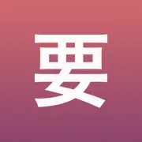
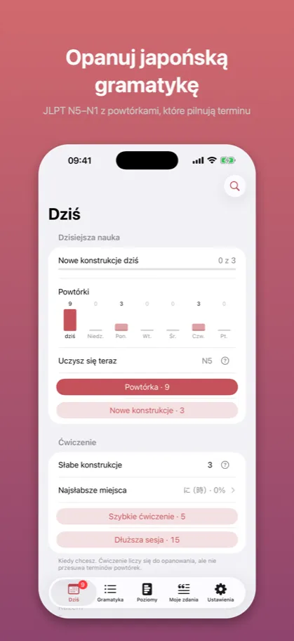
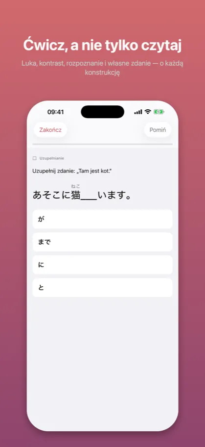
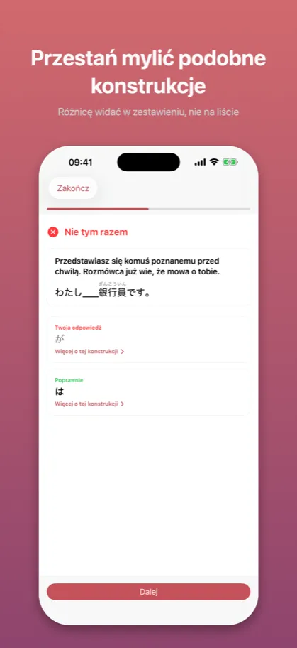
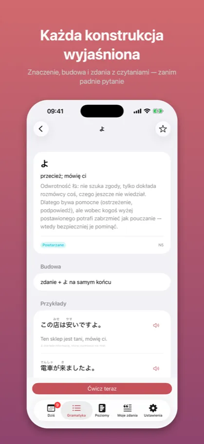
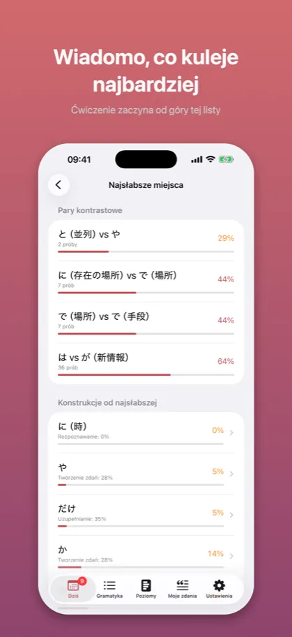

Kaname: Gramatyka japońska要
Powtórki JLPT: N5 N4 N3 N2 N1
App Store →Aplikacja darmowa, z zakupem w środku
Mylisz podobne konstrukcje? Zobacz je obok siebie w prawdziwych zdaniach, nie w samym opisie. Do tego skan japońskiego ze zdjęcia i sprawdzenie własnego zdania przez AI.
Jak to wygląda
{kind=link}

JLPT N5–N1 z powtórkami, które pilnują terminu
{kind=link}

Luka, kontrast, rozpoznanie i własne zdanie — o każdą konstrukcję
{kind=link}

Różnicę widać w zestawieniu, nie na liście
{kind=link}

Znaczenie, budowa i zdania z czytaniami — zanim padnie pytanie
{kind=link}

Ćwiczenie zaczyna od góry tej listy
Opis ze sklepu
Kaname uczy gramatyki japońskiej tak, jak działa prawdziwa znajomość języka: nie sprawdza, czy pamiętasz regułkę, tylko czy potrafisz jej użyć.
Cały materiał JLPT – od N5 do N1.
CZTERY NIEZALEŻNE KOMPETENCJE
Każda konstrukcja ma cztery osobne wskaźniki opanowania:
- Rozpoznawanie – co ta konstrukcja wnosi do zdania
- Uzupełnianie – czy trafisz właściwą formę w luce
- Rozróżnianie – czy odróżnisz ją od konstrukcji mylącej
- Tworzenie zdań – czy użyjesz jej sam, bez podpowiedzi
Sesja sama kieruje pytania tam, gdzie wypadasz najsłabiej. Konstrukcja rozpoznawana bezbłędnie, ale myląca się z podobną, dostanie głównie pytania kontrastowe. To właśnie odróżnia Kaname od zwykłych fiszek.
PARY KONTRASTOWE
なら czy たら? そう czy らしい? はず czy わけ? Aplikacja zestawia mylące się konstrukcje w konkretnych sytuacjach i za każdym razem wyjaśnia, dlaczego akurat ta forma jest naturalna – a druga nie.
SYSTEM POWTÓREK
Odstępy 4 godziny / 1 / 4 / 7 / 14 / 30 / 90 / 180 dni, dostosowywane do Twoich wyników. Status „opanowane” wymaga wysokiego wyniku we wszystkich kompetencjach, które da się dla danej konstrukcji sprawdzić, oraz trzech udanych powtórek rozłożonych na co najmniej trzy tygodnie. Jeden dobry dzień nie wystarcza.
PLAN NAUKI
Nowe konstrukcje z wyższego poziomu pojawiają się dopiero wtedy, gdy poprzedni poziom wszedł w tryb powtórek. Zamiast dorzucać materiał, aplikacja pilnuje, żeby fundament faktycznie się trzymał.
SKANUJ JAPOŃSKI ZE ZDJĘCIA
Zobaczyłeś zdanie w mandze albo w podręczniku? Zrób zdjęcie. Tekst rozpoznaje się na Twoim telefonie – zdjęcie nigdzie nie jest wysyłane ani zapisywane. Wybierasz zdanie z rozpoznanych linii, poprawiasz je, jeśli trzeba, i zapisujesz.
WYŁAWIANIE ZDAŃ
Zapisz złowione zdanie i przypisz je do ćwiczonej konstrukcji – wróci w Twoich powtórkach jako własny przykład. Kanoniczna zostaje konstrukcja z katalogu; Twoje zdanie jest przy niej osobistym przykładem.
ANALIZA AI – OSOBNO I Z WŁASNEJ WOLI
Napisz własne zdanie, a model powie, co dokładnie jest nie tak i dlaczego – zamiast samego „źle”. Rozpozna też konstrukcje we wklejonym tekście.
To warstwa dodatkowa i całkowicie opcjonalna. Bez niej aplikacja liczy postęp i terminy dokładnie tak samo; każde wywołanie jest na Twoje wyraźne żądanie, a licznik stoi przy przycisku.
CO JEST ZA DARMO
Cały poziom JLPT N5, razem z parami kontrastowymi i wszystkimi czterema typami ćwiczeń. Bez limitu czasu, bez limitu sesji, bez reklam. Do tego kilka wywołań analizy AI miesięcznie.
CO MOŻESZ KUPIĆ
Poziomy N4, N3, N2 i N1 – pojedynczo, w zestawach albo w całości. Zakup jednorazowy, bez subskrypcji i bez konta; dostęp nie wygasa.
Kto kupił Premium wcześniej, ma N2 i N1 bez dopłaty. Obietnica złożona w opisie tej aplikacji zostaje dotrzymana.
Analiza AI jest osobną subskrypcją, bo jako jedyna kosztuje przy każdym użyciu: 14,99 zł miesięcznie albo 119,99 zł rocznie, odnawiana automatycznie, do wyłączenia w ustawieniach Apple ID. Poziomów JLPT ta subskrypcja nie dotyczy i nigdy nie będzie dotyczyć.
PRYWATNOŚĆ
- Bez konta i bez logowania
- Bez reklam i bez śledzenia
- Bez analityki i bez bibliotek firm trzecich
- Cały postęp zostaje na Twoim urządzeniu
- Nauka, powtórki i skanowanie działają bez internetu
Sieci używa wyłącznie analiza AI i tylko wtedy, gdy sam ją wywołasz: na serwer jedzie ćwiczona konstrukcja i zdanie, które napisałeś. Nie jedzie tam historia nauki, nie jedzie nic o Tobie i nigdy nie jedzie zdjęcie – tekst ze zdjęcia odczytuje sam telefon.
Wyjaśnienia i zdania przykładowe napisano specjalnie na potrzeby tej aplikacji.
Kaname (要) to nit spinający składany wachlarz – stąd przenośnie „sedno, rzecz kluczowa”. Bo o to tu chodzi: o różnicę, która decyduje.
WARUNKI
Warunki korzystania (EULA): https://www.apple.com/legal/internet-services/itunes/dev/stdeula/
Polityka prywatności: https://jakub-dwojak-aseity.github.io/app-policies/kaname/1.2/privacy.html
Powyższy opis jest tym samym tekstem, który stoi na karcie aplikacji w App Store – pochodzi z tego samego pliku.
App Store →Aplikacja darmowa, z zakupem w środku
Częste pytania
Czego uczy Kaname?
Kaname uczy gramatyki japońskiej tak, jak działa prawdziwa znajomość języka: nie sprawdza, czy pamiętasz regułkę, tylko czy potrafisz jej użyć.
Cały materiał JLPT – od N5 do N1.
Ile kosztuje Kaname?
Cały poziom JLPT N5, razem z parami kontrastowymi i wszystkimi czterema typami ćwiczeń. Bez limitu czasu, bez limitu sesji, bez reklam. Do tego kilka wywołań analizy AI miesięcznie.
Poziomy N4, N3, N2 i N1 – pojedynczo, w zestawach albo w całości. Zakup jednorazowy, bez subskrypcji i bez konta; dostęp nie wygasa.
Czy działa bez internetu i bez konta?
- Bez konta i bez logowania
- Bez reklam i bez śledzenia
- Bez analityki i bez bibliotek firm trzecich
- Cały postęp zostaje na Twoim urządzeniu
- Nauka, powtórki i skanowanie działają bez internetu
Sieci używa wyłącznie analiza AI i tylko wtedy, gdy sam ją wywołasz: na serwer jedzie ćwiczona konstrukcja i zdanie, które napisałeś. Nie jedzie tam historia nauki, nie jedzie nic o Tobie i nigdy nie jedzie zdjęcie – tekst ze zdjęcia odczytuje sam telefon.
Dokumenty
Pozostałe aplikacje
- Bunmyaku: Japoński w zdaniu — Słówka, kanji i furigana
- Katsuyokei: Odmiana japońska — Czasowniki, formy, fiszki
- Joshi: Partykuły japońskie — Gramatyka i ćwiczenia JLPT
- Kazoekata: Liczniki japońskie — Liczenie, kanji, ćwiczenia
- Kuzushi: Mowa potoczna — Anime, dorama i skróty
- Shindan: Poziom japońskiego — Test JLPT: N5 N4 N3 N2 N1
- Keigo: Grzeczność japońska — Japoński formalny do pracy
- Kifuku: Akcent japoński — Wymowa, intonacja, słuchanie
- Onomatope: Dźwięki i wyrażenia — Słówka z mangi i anime